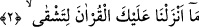

değersizliği demektir.”
et-Te’vîlâtü’n-Necmiyye’de şöyle der: “Tâhâ”; yâni ey nübüvvet yaygısının
kendisiyle dürüldüğü, ey kendisiyle mükevvenâtın hüviyyetimize büründüğü kimse!”
Bâzı âlimler ise şöyle demiştir: “Tâhâ” hurûf-ı mukattaadan değildir. Akk dilinde,
Habeşçe, Nebatça veya Süryânîce dillerinden birinde “Ey Adam!” mânâsına gelen bir
kelimedir ve onunla Hz. Peygamber (a.s.) kastedilmiştir.”
Bazı tefsirlerde şöyle der: “Tâ” cümel hesabına (hisâb-ı cümel/cümmel) göre dokuz,
“hâ” ise beştir. İkisinin toplamı ise on dört olur. Çoğunlukla ay, on dördüncü gece
dolunay hâline gelir. Şu halde bu hitap içermektedir ki ‘Ey ayın on dördü!’ Burada
kendisine seslenilen ise Hz. Risâlet (s.a.)’dir. Dolunay olması, o Hazret’in câmi olma
mertebesindeki kemâline işârettir.” Nitekim bu husus âriflere gizli değildir.
Ay kâmil olunca daha ziyade nurlu olur
O vakit ay güneşin nuruna ayna olur
Bazen dolunay, bazen de dolunayın şahı olursun
Göğsün genişletilmiştir, işin de göğüsleri genişletmek
Küfür ve dalâletin karanlık gecesinde
Senin ayından celal nuru rûşen olup parlar.
Hasan Basrî, “Tâhâ”yı Rasûlullah (a.s.)’a namazda iki ayağını birlikte yere koyması
için bir emir olarak “heb” vezni üzere “tah” diye okumuştur. Çünkü Peygamber
Efendimiz vahiy geldikten sonra kendini aşırı derecede ibâdete vermişti. Sabaha kadar
namaz kılıyor ve uzun süre ayakta kaldığı için ayaklarını dinlendirmek için tek ayak
üzerinde duruyordu. Böylece kendisini aşırı derecede yoruyordu.
Bir hadiste şöyle buyrulmuştur: “Allah Teâlâ Âdem’i yaratmadan iki bin yıl önce
“Tâhâ” ve “Yâsîn”i okudu. Melekler bunu işitince: Ne mutlu bunları içinde taşıyıp
ezberleyenlere! Ne mutlu sûreler kendilerine indirilecek olan Muhammed ümmetine!
Ne mutlu bu sûreleri okuyan dillere!” dediler.”[53] Bu hadîsi Taberânî ve Firdevs
müellifi rivâyet etmiştir.
İbn Abbas (r.anhümâ)’nın rivayetine göre Rasûlullah (s.a.) şöyle buyurmuştur: “İlk
kitaptan Bakara’nın geçtiği sûre, Mûsâ’nın levhalarından “Tâhâ” ve “Tâsîn”li
sûreler, arşın altından Kur’an’ın ilk âyetleri ve Bakara’nın son ayetleri bana verildi.
Ziyâde olarak da bana mufassal (uzun) sûreler verildi.”[54] Bu hadis, Bahru’l-ulûm’da
geçmektedir.
2. Biz sana bu Kur’ân-ı, güçlük çekesin diye indirmedik.